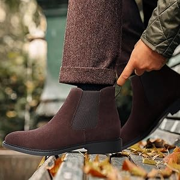
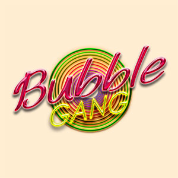
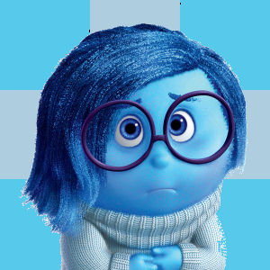

Wag ka titigil
hangga't hindi ka nakukulong

Pag di ka nagse-seatbelt
kikidnappin ka ng police

Mag anak ka na ngayon
para pag graduate ng anak mo, bata ka pa
Poetry
by Pablo Neruda
And it was at that age … Poetry arrived
in search of me. I don’t know, I don’t know where
it came from, from winter or a river.
I don’t know how or when,
no they were not voices, they were not
words, nor silence,
but from a street I was summoned,
from the branches of night,
abruptly from the others,
among violent fires
or returning alone,
there I was without a face
and it touched me.

Kaya ka nadedepress
kasi kulang ka sa dasal
Mga Salitang Pampalakas ng Loob
- Ikaw ay mahalaga.
- Kaya mong harapin ang lahat ng pagsubok.
- Napakagaling mo sa iyong ginagawa.
- Narito ako para sa'yo.
- Ipagpatuloy mo ang pagiging positibo.
- Pinagmamalaki kita.
- Ang sipag at tiyaga mo ay nagbubunga.
- Huwag kang susuko, malapit ka na sa tagumpay.
- Maganda ang hinaharap mo.
- Pinapalakas mo ang loob ko.